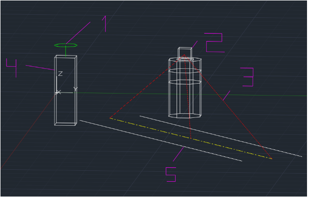

BIKE SHARE PROJECT
This is the first project I worked at Purdue University. This project states in order to improve safety and increase mobility around campus, we designed a speed trap sensor to put in intersection on campus in order to allow pedestrians to be warned if bikes or any other oncoming traffic is comming. My group did a thorough background research and used prototyping, testing, and weighted decision matric (WDM) to construct the final design.
Background Information
According to our research, walking and bicycling are the main modes of transportation followed by skateboarding. There had been complaints last year about near-misses and the speeds that people are riding. Also due to weather condition in West Lafayette, it has precipitation and fog all year round and snow October through April. All of those factors may cause students in danger while waling or bicycling on campus.
Idea Evaluation
We made several prototypes in order to show speed sensor. Then we analysis the pros and cons based on thought experiment. For the speed trap sensor, its the most effective way to warn pedestrian but it is complicate to install. For the walkway illumination its less complicated than speed trap, and provide lightning, but it is difficult to illuminate the correct areas without blinding others.
Below is the speed trap sensor prototype my groupmate built based on our idea generation:
Throughout this project I think the most difficult part is to design 3D prototype and there's only one person in my group who was fliud with the tools of prototype and TI board so all of us have to ask him to teach us and explain. I learned the fundation coding in this project which get me familiar with coding.
Below is the link to my final report document.